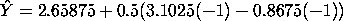
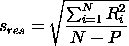

5.6. Case Studies
5.6.1. Eddy Current Probe Sensitivity Case Study
5.6.1.9. |
Validate the Fitted Model |

The next step is to
validate the model.
The primary method of model validation is graphical residual
analysis, that is, through an assortment of plots of the
differences between the observed data Y and the predicted value
 from the model.
For example, the design point (-1,-1,-1) has an observed data
point (from the Background and
data section) of Y = 1.70, while the predicted value from
the above fitted model for this design point is
from the model.
For example, the design point (-1,-1,-1) has an observed data
point (from the Background and
data section) of Y = 1.70, while the predicted value from
the above fitted model for this design point is

should be near Y for all 8 design points. Hence the 8 residuals
should all be near zero. The 8 predicted values
and residuals for this data and model are:
X1 X2 X3 Observed Predicted Residual ---------------------------------------------- -1 -1 -1 1.70 1.54125 0.15875 +1 -1 -1 4.57 4.64375 -0.07375 -1 +1 -1 0.55 0.67375 -0.12375 +1 +1 -1 3.39 3.77625 -0.38625 -1 -1 +1 1.51 1.54125 -0.03125 +1 -1 +1 4.59 4.64375 -0.05375 -1 +1 +1 0.67 0.67375 -0.00375 +1 +1 +1 4.29 3.77625 0.51375

Further, if the model is adequate and complete, then the residuals should have no structural relationship with any other variables that may have been recorded. In particular, this includes the run sequence (time), which is really serving as a surrogate for any physical or environmental variable correlated with time. Ideally, all such residual scatter plots should appear structureless. Any scatter plot which exhibits structure suggests that that factor should have been formally included as part of the prediction equation.
Validating the prediction equation thus means that we do a final check as to whether any other variables may have been inadvertantly left out of the prediction equation, including variables drifting with time.
The graphical residual analysis thus consists of scatter plots of the residuals versus all 3 main factors and 4 interactions (all such plots should be structureless), a scatter plot of the residuals versus run sequence (which also should be structureless), and a normal probability plot of the residuals (which should be near linear). We present such plots below.
The first plot is a normal probability plot of the residuals. The second plot is a run sequence plot of the residuals. The remaining plots are plots of the residuals against each of the factors and each of the interaction terms.
- Main Effects and Interactions: The X1 and X2 scatter plots
are "flat" (as they must be since X1 and X2 were explicitly
included in the model). The X3 plot shows some structure
as does the X1*X3, the X2*X3, and the X1*X2*X3 plots. The
X1*X2 shows little structure. The net effect is that the
relative ordering of these scatter plots is very much in
agreement (again, as they must be) with the relative ordering
of the "unimportant" factors given on lines 3 to 7 of the
Yates table. From
the Yates table and the X2*X3 plot, it is seen that the
next most influential term to be added to the model would
be X2*X3. In effect, these plots offer a higher-resolution
confirmation of the ordering that was in the Yates table.
On the other hand, none of these other factors "passed" the
five criteria as given in the previous section and so these
factors, suggestively influential as they might be, are
still not influential enough to be added to the model.
- Time Drift: The run sequence scatter plot is random. Hence
there does not appear to be a drift, either from time, or
any factor (e.g., temperature, humidity, pressure, etc.)
possibly correlated with time.
- Normality: The normal probability plot of the 8 residuals has some curvature which suggests that additional terms be added. On the other hand, the correlation coeffient of the 8 ordered residuals and the 8 theoretical normal N(0,1) order statistic medians (which define the two axes of the plot) has the value 0.934, which is well within acceptable (5%) limits of the normal probability plot correlation coefficient test for normality. In effect, therefore the plot is not so non-linear as to reject normality.